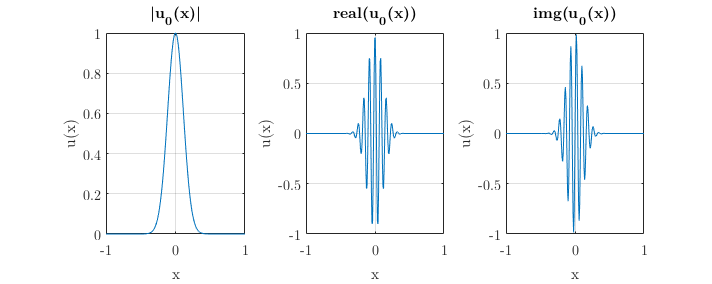
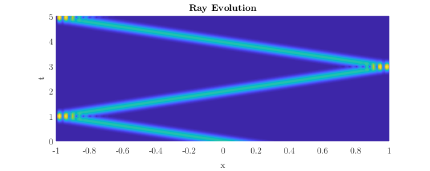
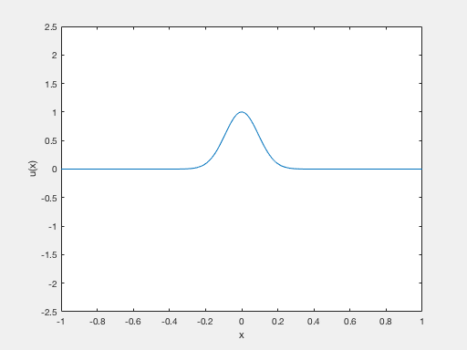

DyCon Tutorials
WKB expasion
In the particular case under analysis, the construction that we obtain is then applied to the study of controllability properties for the one dimensional fractional Schrodinger equation.
With highly oscillatory initial datum
Nx = 100;
L = 1;
hx = (2*L)/(Nx+1);
Now, we can be define the function_handle u0, from before data.
x0 = 0;
fr = pi^2/16;
gamma = hx^(-0.9);
u0 = @(x) exp(-0.5*gamma*(x-x0).^2).*exp(1i*fr*x/hx);
Can see the representation of initial Datum
fig = gcf;
set(gcf,'Units','pixels','Position',[427 306 712 284])
%
x = -L:hx:L;
%
subplot(1,3,1)
plot(x,abs(u0(x)))
title('|u_0(x)|')
xlabel('x'); ylabel('u(x)');
%
subplot(1,3,2)
plot(x,real(u0(x)))
title('real(u_0(x))')
xlabel('x'); ylabel('u(x)');
%
subplot(1,3,3)
plot(x,imag(u0(x)))
title('img(u_0(x))')
xlabel('x'); ylabel('u(x)');
%
format_plot(fig)

Solution for s = 1/2
To solve this equation, Need define the next parameters;
s = 0.5 % Laplacian Order
L % x in (-L , L)
Nx % Number of points in space
T = 5 % Final time
s =
0.5000
L =
1
Nx =
100
T =
5
And u0 is the function_handle, that have showed before. Now call the function fractional_schr to solve the equation.
[x,t,u] = fractional_schr(s,L,Nx,T,u0);
Obtain the in u variable. Now we can see a graphical interpretation
[X ,T] = meshgrid(x,t);
%
clf
mesh(X,T,u');
format_plot(gcf);view(0,90)
xlabel('x'); ylabel('t'); title('Ray Evolution');

For last, if you type “animation(x,t,u)”, in MATLAB console. You can see the evolution in time of this wave.
